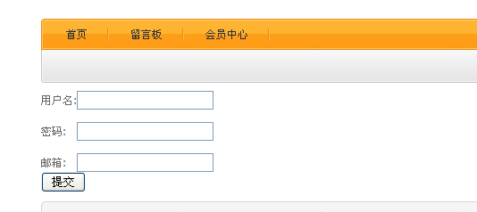
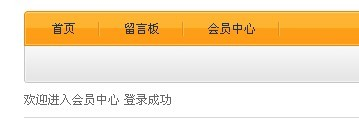
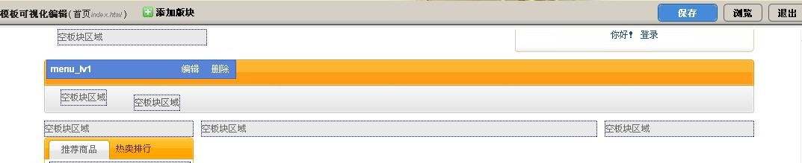
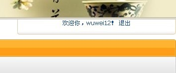

pam全称：Pluggable Authentication Modules 即可插入的验证模块。和以往的登录认证不同,pam会把用户分成若干个体系,用不同的标识来区分不同的体系,在ECOS中我们把体系分成前台和后台，前台体系用member 后台体系用shopadmin来区分,然后通过不同的体系去进行不同的身份验证。
pam继承于desktop所以安装好desktop也就把pam安装好了！pam会把登录信息存储在表sdb_pam_account中密码以 md5 加密。在pam中能够自动的验证pam中的登录信息，提供验证码及其验证!
修改notebook\app\notebook\site.xml文件,在原文件中加上如下代码：
<module controller='site_passport' >
<name>passport</name>
<title>会员中心</title>
<disable>false</disable>
<allow_menu act='index'>会员中心</allow_menu>
<default_menu>
<title>会员中心</title>
<act>index</act>
<hidden>false</hidden>
</default_menu>
</module>
...notebook\app\base>cmd update
在app/notebook/controller/site/ 目录下创建 passport.php 文件
<?php
class notebook_ctl_site_passport extends site_controller {
function __construct(&$app){
parent::__construct($app);
$this->_response->set_header('Cache-Control', 'no-store');
kernel::single('base_session')->start();//开启session
}
function index() {
$this->gen_login_form();
$this->page('member-login.html');
} //用于显示登录页面
private function gen_login_form(){
$url = $this->gen_url(array('app'=>'notebook','ctl'=>'site_passport','act'=>'index'));
$auth = pam_auth::instance(pam_account::get_account_type($this->app->app_id)); //实例化登录方式类
$auth->set_appid($this->app->app_id);
$pagedata['singup_url'] = $this->gen_url(array('app'=>'notebook','ctl'=>'site_passport','act'=>'reg'));//注册地址
$pagedata['loginName'] = $_COOKIE['loginName'];
#设置回调函数地址
$auth->set_redirect_url(base64_encode($this->gen_url(array('app'=>'notebook',
'ctl'=>'site_passport','act'=>'post_login','arg'=>base64_encode($url)))));
//设置验证后返回地址，已经base64_encode编码
foreach(kernel::servicelist('passport') as $k=>$passport){
if($auth->is_module_valid($k)){ //验证登录方式是否开启
$this->pagedata['passports'][] = array(
'name'=>$auth->get_name($k)?$auth->get_name($k):$passport->get_name(), //登陆框名
'html'=>$passport->get_login_form($auth, 'notebook', 'member-login.html', $pagedata), //生成登录框
);
}
}
}
function gen_vcode(){
$vcode = kernel::single('base_vcode'); //创建验证码实例
$vcode->length(4); //验证码数字长度
$vcode->verify_key($this->app->app_id);//验证码key
$vcode->display(); //显示验证码
}
}
在app/notebook/ view 目录下创建 member-login.html 文件
<form action="<{$callback}>" method="post" id='loginBar'>
<div class="loginbox">
<ul>
<li>
<label class="leftlabel"><i>*</i><{t}>用户名：<{/t}></label>
<div class="floatdiv">
<{input name="uname" vtype="required" class="inputstyle" id="uname" tabindex="1" value="{$loginName}"}>
<a href="<{$singup_url}>"><{t}>立即注册<{/t}></a></div>
</li>
<li>
<label class="leftlabel"><i>*</i><{t}>密码：<{/t}></label>
<div class="floatdiv">
<{input name="password" type="password" class="inputstyle" vtype="required" id="password" tabindex="2"}>
</li>
<{if $show_varycode}>
<li>
<label class="leftlabel"><i>*</i><{t}>验证码：<{/t}></label>
<div class="floatdiv">
<span id='verifyCodebox'>
<{input vtype="required&&number" size="4" maxlength="4" name="verifycode" id="iptlogin" tabindex="3"}>
<span class='verifyCode' style="display:none">
<img id="membervocde" src="#" border="1" />
<a href="javascript:changeimg('membervocde')">
<{t}>看不清楚?换个图片<{/t}></a> </span> </span></div>
</li>
<{/if}>
<li>
<label class="leftlabel"></label>
<div class="floatdiv">
<input class="actbtn btn-login" type="submit" value="<{t}>登录<{/t}>" tabindex="4" />
<input type="hidden" name="forward" value="<{$forward}>">
</div>
</li>
</ul>
</div>
</form>
<{if $show_varycode}>
<script>
$$('#loginBar input').addEvent('focus',function(){
if($(this.form).retrieve('showvcode',false))return;
changeimg('membervocde');
$('verifyCodebox').getElements('span').show();
$(this.form).store('showvcode',true);
});
function changeimg(id){
$(id).set('src','<{link app="notebook" ctl="site_passport" act="gen_vcode"}>#'+$time());
}
</script>
<{/if}>
在notebook\app\notebook\lib 目录下面创建service文件夹之后再在此文件夹下面建立vcode.php文件
<?php
class notebook_service_vcode{
function __construct($app){
$this->app = $app;
}
function status(){
if(app::get('notebook')->getConf('site.login_valide') == 'false'){
if($_SESSION['error_count'][$this->app->app_id] >= 3)
return true;
}
return app::get('notebook')->getConf('site.login_valide') == 'true' ? true : false;
}
}
在notebook\app\notebook 目录下面创建setting.php文件
<?php
$setting= array( 'site.login_valide'=>array('type'=>SET_T_BOOL,
'default'=>'true','desc'=>app::get('notebook')->_('会员登录需输入验证码'))
);
<?php
class notebook_task{
function post_install($options){pam_account::register_account_type('notebook',
'member',app::get('notebook')->_('前台会员系统'));
}
}
修改notebook\app\notebook\services.xml文件，在原文件中加上如下代码：
<service id="passport">
<class>pam_passport_basic</class>
<class>pam_passport_oauth</class>
<class>pam_passport_uc</class>
</service>
<service id="api.pam_callback">
<class>pam_callback</class>
</service>
D:\wamp\www\notebook\app\base>cmd uninstall -r notebook ?Application notebook removed
D:\wamp\www\notebook\app\base>cmd install notebook Creating table sdb_notebook_item Installing service notebook_addon Installing service desktop_finder.notebook_mdl_item Installing Cache_Expires DB:NOTEBOOK_ITEM UPDATE CACHE EXPIRES KV DATA ?Installing menu notebook_ctl_admin_notebook Installing workground notebook_admin_notebook Installing permission notebook_manage Application notebook installed... ok.前台查看效果
在notebook\app\notebook\dbschema 目录下建立member.php文件
<?php
$db['member']=
array (
'columns' =>
array (
'member_id' =>
array (
'type' => 'number',
'required' => true,
'extra' => 'auto_increment',
'pkey' => true,
),
'member_user' =>
array (
'type' => 'varchar(100)',
'in_list'=>true,
'is_title'=>true,
'default_in_list'=>true,
'label'=>'用户名',
'filtertype'=>true,
'searchtype'=>true,
'searchtype' => 'has',
),
'member_password' =>
array (
'lable' => '密码',
'type' => 'varchar(32)',
),
'member_time' =>
array (
'in_list'=>true,
'default_in_list' => true,
'label' => '注册时间',
'type' => 'time',
),
'member_email' =>
array (
'in_list'=>true,
'default_in_list' => true,
'label' => 'email',
'type' => 'email',
),
),
);
D:\wamp\www\notebook\app\base>cmd update
Scanning local Applications... ok.
?Updating base_application_dbtable@notebook.
CREATE TABLE `sdb_notebook_member` (
`member_id` mediumint(8) unsigned not null,
`member_user` varchar(100),
`member_password` varchar(32),
`member_time` int(10) unsigned,
`member_email` varchar(255),
primary key (member_id)
)ENGINE = MyISAM DEFAULT CHARACTER SET utf8;
Updating base_application_cache_expires@notebook.
Installing Cache_Expires DB:NOTEBOOK_ITEM
UPDATE CACHE EXPIRES KV DATA
注册流程主要是把用户输入信息录入到sdb_pam_account表和sdb_notebook_member中。
...
function reg(){
$this->page('reg.html');
}
function regindb(){
$data = array(
'member_user'=>$_POST['user'],
'member_password'=>md5($_POST['password']),
'member_time'=>time(),
'member_email'=>$_POST['email'],
);
$this->app->model('member')->insert($data);//插入到notebook_member表中
unset($data['member_user']);
unset($data['member_password']);
unset($data['member_time']);
unset($data['member_email']);
$data = array(
'account_type'=>'member',
'login_name'=>$_POST['user'],
'login_password'=>md5($_POST['password']),
'createtime'=>time(),
);
$a = app::get('pam')->model('account')->insert($data);//插入到pam_account表中
unset($data);
$this->splash('success',$this->gen_url(array('app'=>'notebook',
'ctl'=>'site_passport','act'=>'index')),app::get('notebook')->_('注册成功！'));
}
...
<form action="<{link app='notebook' ctl='site_passport' act='regindb' }>" method="post">
<span>用户名:</span><input type="text" name="user" placeholder="请输入用户名"/><br /><br />
<span>密码:</span> <input type="text" name="password" placeholder="请输入密码" /><br /><br />
<span>邮箱:</span> <input type="text" name="email" placeholder="请输入邮箱" /><br />
<input type="submit" value="提交" />
</form>

现在会员中心的基本功能已经实现，但是我们接下来还需要进行一些逻辑判断，以便使我们的会员中心更加符合业务逻辑。
在pam中notebook\app\pam\lib下的callback.php用于用户验证
修改notebook\app\notebook\controller\site目录下passport.php文件,添加post_login方法
function post_login($url=null) {
$url = base64_decode($url);
$member_id = $_SESSION['account'][pam_account::get_account_type($this->app->app_id)];
if($member_id && $_SESSION['last_error'] == ''){
//此通过Pam验证 如有必要可以再验证是否在member中存在
$username = $this->app->model('member')->getUsername($member_id);//调用
$_SESSION['username'] = $username;
$this->splash('success',$this->gen_url(array('app'=>'notebook','ctl'=>'site_passport','act'=>'member')),app::get('notebook')->_('登录成功'));
}else{
$msg = $_SESSION['error']?$_SESSION['error']:app::get('notebook')->_('页面已过期,操作失败!');
unset($_SESSION['error']);
$this->splash('failed',$this->gen_url(array('app'=>'notebook','ctl'=>'site_passport','act'=>'index')),app::get('notebook')->_($msg));
}
}
function member() {
$url = $this->gen_url(array('app'=>'notebook','ctl'=>'site_passport','act'=>'index'));
if(!isset($_SESSION['username']))
$this->splash('failed',$url,app::get('notebook')->_('你还没登录，请登录！'));
$this->page('member.html');
}
在app/notebook/view 目录下创建member.html文件
<p>欢迎进入会员中心 登录成功</p>
在notebook\app\notebook\model 目录下创建member.php文件
<?php
class notebook_mdl_member extends base_db_model{
public function getUsername($id){
$sql = "select login_name from sdb_pam_account where account_id='".$id."'";
$return = $this->db->selectrow($sql);
$usrename = $return['login_name'];
return $usrename;
}
}
修改notebook\app\notebook\controller\site\passport.php文件index方法
function index() {
$url = $this->gen_url(array('app'=>'notebook','ctl'=>'site_passport','act'=>'member'));
if(isset($_SESSION['username']))
$this->splash('success',$url,app::get('notebook')->_('您已经是登陆状态，不需要重新登陆'));
$this->gen_login_form();
$this->page('member-login.html');
}
进入前台登录 查看效果

widgets.php 文件
<?php
$setting['author']='wuw';
$setting['version']='v1.0';
$setting['name']='member';
$setting['stime']='2011-1-12';
$setting['catalog']='notebook模板的挂件';
$setting['description'] ='会员中心';
$setting['usual'] = '1'; //是否出现在挂件中心首页.(1\0)
$setting['template'] = array(
'default.html'=>'会员登登信息'
); //挂件包含的模板文件和名称
?>
<?php
function widget_member($setting,&$smarty){
$sess = kernel::single('base_session');
$sess->start();
if ($_SESSION['username']!=array()){
$data['username'] = $_SESSION['username'];
$data['iflogin'] = true;
}else{
$data['iflogin'] = false;
}
return $data;
}
?>
<div>
<{if $data.iflogin==true}>
欢迎你，<{$data.username}>！
<a href="<{link app='notebook' ctl='site_passport' act='logout' }>">退出</a>
<{else}>
你好！
<a href="<{link app='notebook' ctl='site_passport' act='index' }>">登录</a>
<{/if}>
</div>
D:\wamp\www\notebook\app\base>cmd update

添加好挂件 进入前台登录查看效果

在notebook\app\notebook\controller\site\passport.php文件中加入logout方法
function logout() {
unset($_SESSION['account'][$this->type]);
unset($_SESSION['last_error']);
unset($_SESSION['username']);
unset($_SESSION['login_time']);
$this->splash('success',$this->gen_url(array('app'=>'notebook',
'ctl'=>'site_passport','act'=>'index')),app::get('notebook')->_('你已退出系统'));
}